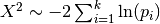
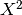
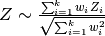

Meta-analysis - methods¶
Data preparation¶
If raw data were available we used a quantile normalization. Studies with age and gender covariates were included (7 total). Statistical analyses were carried out at the probe level using Bioconductor’s Limma package [Ritchie15]. Raw expression values as well as summarized output files were saved for downstream analysis. All probes were mapped to current Entrez Gene IDs and if more than one probe corresponded to a given ID then the median expression, log(fold change), p-value and q-value was recorded. For a given study if there are missing expression values among samples the values were imputed using a nearest neighbor algorithm.
Pipeline¶
To the summary files must be created before running the explanatory meta-analysis. There are options within the file to run invivo|invitro, outlier|nonoutlier. The file can also call the individual Rscripts to run each of the study analyses.
Summary¶
Across all studies there are 23539 unique genes. The following table shows how many genes are missing from the overall list as well as how many genes were significant in the individual analyses
the number in parenthesis refers to the analysis with outliers removed
| study | missing | qval < 0.05 | qval < 0.1 | asthma | control | outliers |
|---|---|---|---|---|---|---|
| Giovannini-Chami (GSE19187) | 3903 | 51 (31) | 107 (64) | 13 | 11 | 1 |
| Kicic (GSE18965) | 10640 | 2 (2) | 25 (2) | 9 | 7 | 1 |
| Yang (GSE8190) | 9237 | 243 (0) | 1248 (537) | 19 | 11 | 2 |
| Voraphani (GSE43696) | 4184 | 124 (490) | 327 (1120) | 88 | 20 | 6 |
| unpublished | 7169 | 101 (73) | 280 (224) | 36 | 36 | 4 |
| Wagener (GSE51392) | 3798 | 0 (8) | 0 (51) | 12 | 12 | 2 |
| Christenson (GSE67472) | 5038 | 3492 (3412) | 4581 (4458) | 62 | 43 | 5 |
| Yang16 | 7388 | 0 (0) | 1 (2) | 12 | 12 | 2 |
A summary file of these results is available
The probes in the genes/probes column are not necessarly the number of probes on the array it is the number of probes after filtering that can be mapped to a gene name. The genes portion is the actual number of unique genes after probe averaging.
Note
Wagener, Yang, Yang16, and unpublished are run from the raw data
Fisher’s Method¶
For more information on the basic approach see the Fisher’s method wikipedia entry. Fisher’s method combines p-values into a single test statistic

but this does not account for weights among studies. The distribution of  is a chi-squared distribution, but when weights are introduced the null distribution becomes less straightforward. Another approach that has identical power is to use a weighted Z-score.

which can be traced back to [Lindzey54].